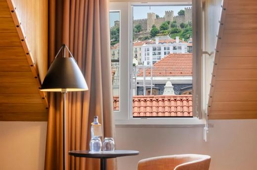
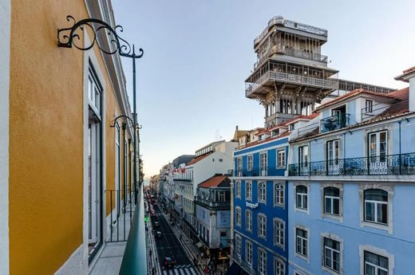
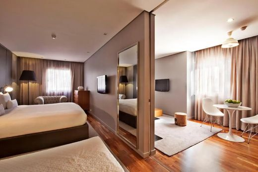
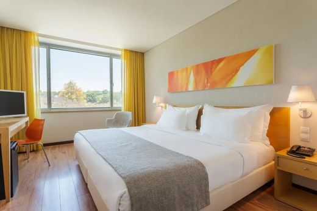
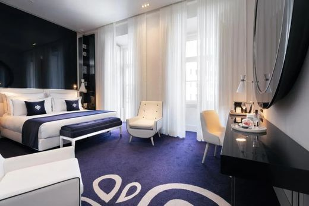
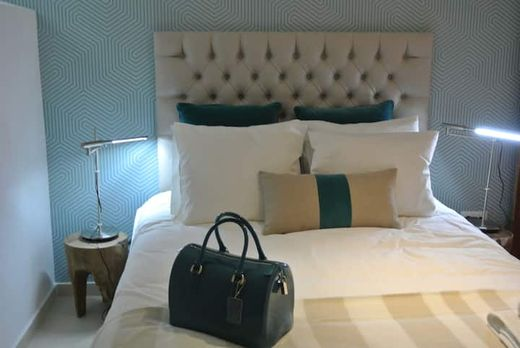
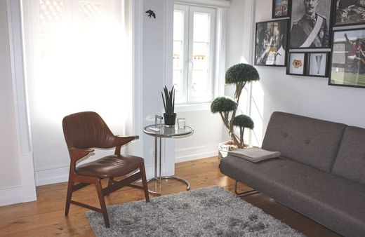
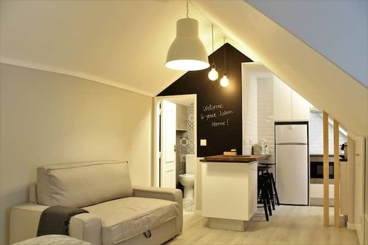
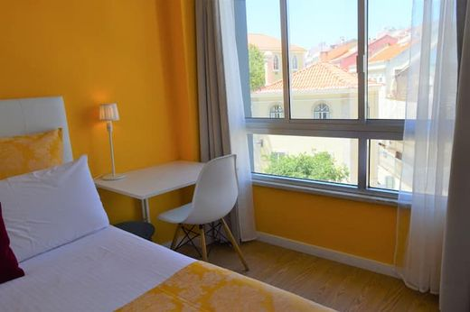
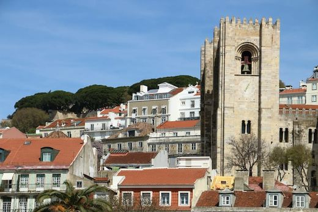

2/16–18 · 2박
리스본
중심(로시우·바이샤)이 평지이고 지하철·트램이 모인다. 언덕(그라사·알파마) 숙소는 밤 귀가가 불리해 뺐다.
| 사진 | 숙소 | 1박 | 평점 | 후기 | 위치 | 판정 |
|---|---|---|---|---|---|---|
 | Ouro Rossio Hotel예약 | 134,852 | 9.3 | 697 | 로시우 광장 150m | 추천 · 평지·중심, 밤에도 사람 많음 |
 | Rossio Plaza Hotel예약 | 142,749 | 8.9 | 3,309 | 로시우 150m | 같은 자리, 후기 3,300 |
 | Altis Prime Hotel예약 | 116,539 | 9.2 | 1,295 | 아베니다 1.2km | 가성비 · 평지·조용, 지하철 5분 |
 | HF Fénix Music예약 | 118,488 | 9.0 | 3,056 | 마르케스 드 폼발 1.7km | 지하철 2분, 조식 좋음 |
 | Portugal Boutique Hotel예약 | 184,985 | 9.4 | 2,648 | 바이샤 250m | 평점 최고, 예산 초과 |
| 사진 | 숙소 | 총액 | 1박 환산 | 평점 | 지역 |
|---|---|---|---|---|---|
 | 그라사 1BR4.91(584) | 263,635 | 131,818 | 4.91 | 그라사 |
 | 바이샤 1BR4.91(461) | 293,594 | 146,797 | 4.91 | 산타마리아 마이오르 |
 | 바이샤 1BR4.92(462) | 301,085 | 150,542 | 4.92 | 산타마리아 마이오르 |
 | 캄푸드우리크 1BR4.92(344) | 332,539 | 166,270 | 4.92 | 캄푸드우리크 |
 | 바이샤 1BR(2침대)4.95(64) | 332,541 | 166,270 | 4.95 | 산타마리아 마이오르 |